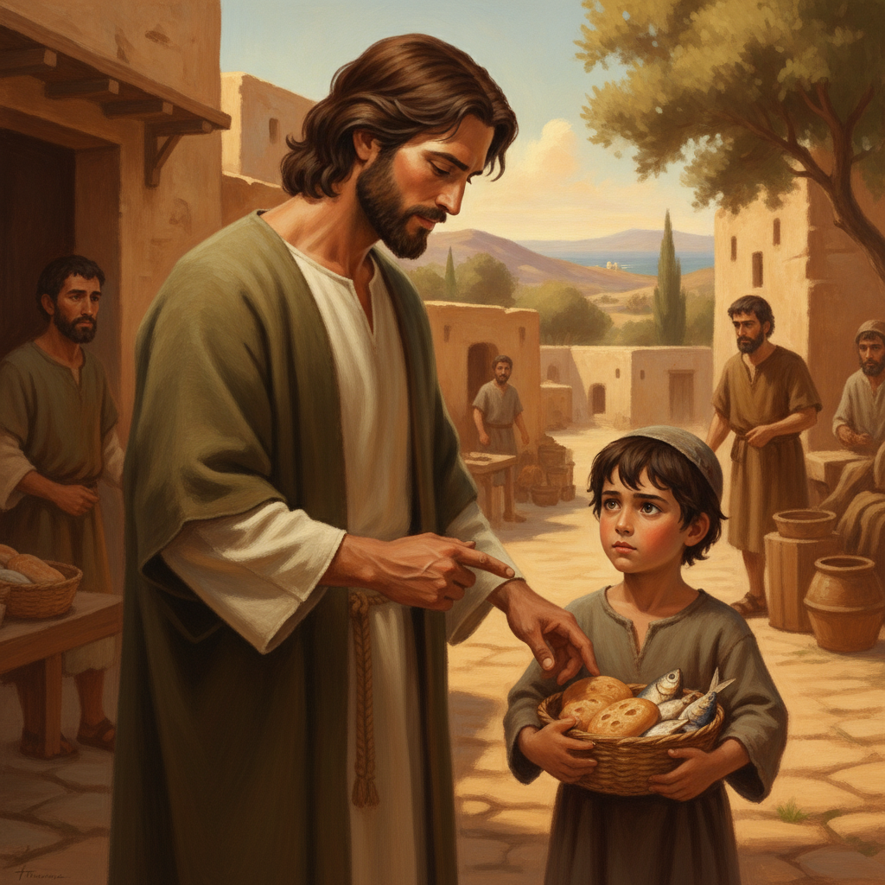
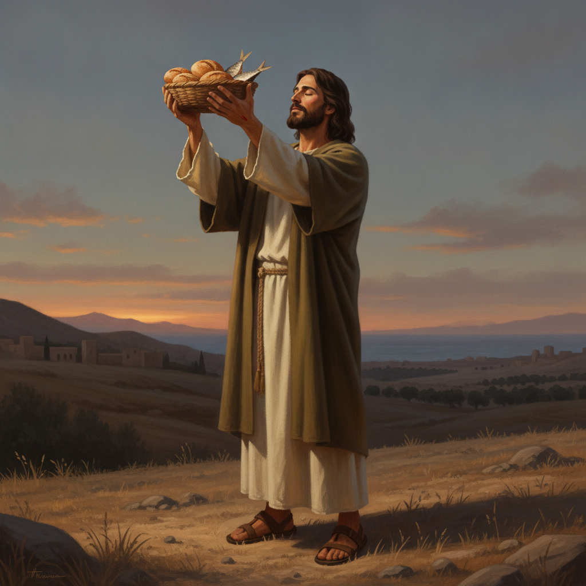
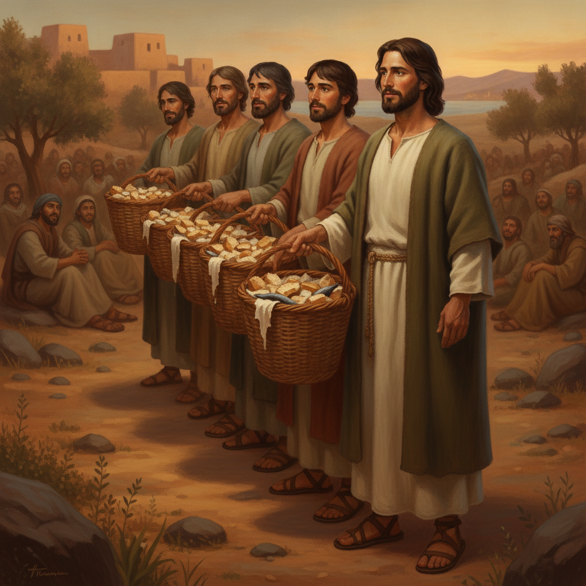

예수님께서는 제자들과 함께 갈릴리 호수 건너편 언덕으로 올라가셨습니다. 지친 몸을 잠시 쉬게 하려던 참이었습니다. 그러나 수많은 사람이 먼 길을 걸어 예수님을 따라왔습니다. 사람들은 예수님께서 아픈 사람들을 고치시는 것을 보았습니다. 그분의 입에서 나오는 생명의 말씀을 듣고자 했습니다. 언덕에는 어른 남자만 오천 명이 넘는 거대한 무리가 모여들었습니다. 산비탈은 사람들로 가득 찼습니다. 예수님께서는 그들을 조용히 바라보셨습니다.
어린이를 위한 말씀 이야기
예수님께서는 제자들과 함께 갈릴리 호수 건너편 언덕으로 올라가셨습니다. 지친 몸을 잠시 쉬게 하려던 참이었습니다. 그러나 수많은 사람이 먼 길을 걸어 예수님을 따라왔습니다. 사람들은 예수님께서 아픈 사람들을 고치시는 것을 보았습니다. 그분의 입에서 나오는 생명의 말씀을 듣고자 했습니다. 언덕에는 어른 남자만 오천 명이 넘는 거대한 무리가 모여들었습니다. 산비탈은 사람들로 가득 찼습니다. 예수님께서는 그들을 조용히 바라보셨습니다.
시간이 흐르자 어느덧 해가 기울며 들판에 붉은 노을이 내려앉았습니다. 사람들은 하루 종일 말씀에 귀를 기울였습니다. 배가 고픈 것도 잊은 채 예수님 곁에 머물렀습니다. 하지만 저녁이 되자 사람들의 뱃속에서 꼬르륵 소리가 나기 시작했습니다. 그곳은 마을에서 멀리 떨어진 외딴 광야였습니다. 주변에는 빵을 살 수 있는 가게도, 식당도 전혀 없었습니다. 서늘한 저녁 바람이 언덕 위로 불어왔습니다. 지친 사람들의 얼굴에 피로가 번졌습니다.
예수님께서는 굶주리고 지친 무리를 바라보셨습니다. 그들의 형편을 불쌍히 여기는 마음이 가득하셨습니다. 예수님께서는 곁에 서 있던 제자 빌립을 돌아보셨습니다. 빌립의 믿음을 시험해 보시고자 조용히 물으셨습니다. 「우리가 어디에서 빵을 사서 이 많은 사람을 먹이겠느냐?」 예수님의 물음에 빌립은 깜짝 놀라 눈을 크게 떴습니다. 빌립은 눈앞에 가득한 군중을 둘러보았습니다. 그의 머릿속이 복잡해졌습니다.
빌립은 재빨리 계산을 해보고는 고개를 절레절레 저었습니다. 「예수님, 이 사람들에게 빵을 아주 조금씩만 나누어 준다고 해도 엄청나게 많은 돈이 듭니다.」 빌립의 목소리에는 막막함이 묻어 있었습니다. 「우리에게는 그만한 돈도 없고, 이 광야에서 음식을 구할 수도 없습니다.」 곁에 서 있던 다른 제자들도 한숨을 내쉬었습니다. 이 거대한 무리를 먹이는 일은 불가능해 보였습니다. 모두의 얼굴에 근심의 그림자가 짙게 드리웠습니다.

그때 다른 제자인 안드레가 한 어린아이의 손을 잡고 다가왔습니다. 아이의 손에는 소박한 작은 바구니가 들려 있었습니다. 안드레가 조심스럽게 입을 열었습니다. 「예수님, 여기 한 아이가 보리떡 다섯 개와 물고기 두 마리를 가지고 있습니다.」 안드레는 말을 잇다가 머뭇거렸습니다. 「하지만 이 많은 사람에게 이것이 무슨 소용이 있겠습니까?」 아이는 수줍은 표정으로 바구니를 품에 안고 있었습니다. 어른 한 사람의 끼니에도 턱없이 모자란 양이었습니다.
아이가 내민 것은 가난한 사람들이 먹는 거친 보리빵이었습니다. 아이에게는 너무나 소중한 저녁 식사였습니다. 아이는 기꺼이 자신의 도시락을 예수님께 내밀었습니다. 예수님께서는 아이의 맑은 눈망울을 내려다보셨습니다. 작은 것을 아낌없이 바친 아이의 예쁜 마음을 보셨습니다. 예수님의 얼굴에 환한 미소가 번졌습니다. 주님께서는 그 작은 도시락을 깊이 기뻐하셨습니다. 아무도 주목하지 않던 작은 선물이 주님의 손에 전해졌습니다.
예수님께서는 제자들에게 사람들을 앉히라고 말씀하셨습니다. 「사람들을 푸른 풀밭 위에 무리 지어 앉게 하여라.」 사람들은 어리둥절해하면서도 말씀에 순종했습니다. 오십 명씩, 백 명씩 줄을 지어 잔디 위에 옹기종기 자리를 잡았습니다. 웅성거리던 들판이 점차 고요해졌습니다. 사람들의 눈길이 언덕 위의 예수님께로 쏠렸습니다. 아무것도 없는 빈 들판에 질서와 기대감이 가득 찼습니다. 모두가 조용히 숨을 죽였습니다.

예수님께서는 보리떡 다섯 개와 물고기 두 마리를 손에 드셨습니다. 그리고 고개를 들어 하늘을 우러러보셨습니다. 하나님 아버지께 온 마음으로 감사 기도를 드리셨습니다. 부족한 형편 속에서도 먼저 감사하신 것입니다. 기도가 끝나자 예수님께서는 빵을 떼어 제자들에게 건네주셨습니다. 그곳에 있던 모든 사람이 숨을 멈추고 지켜보았습니다. 광야의 침묵 속에서 놀라운 기적이 시작되고 있었습니다.
제자들은 예수님께서 떼어 주시는 빵과 물고기를 바구니에 담아 사람들에게 날랐습니다. 그런데 참으로 신기한 일이 벌어졌습니다. 바구니에서 음식을 나누어 주어도 빵과 물고기가 줄어들지 않았습니다. 나누면 나눌수록 바구니에 음식이 샘솟듯 가득 찼습니다. 사람들은 따뜻한 빵과 물고기를 배부르게 먹었습니다. 굶주렸던 아이들도, 어른들도 모두 만족스럽게 미소를 지었습니다. 광야는 순식간에 풍성한 축제의 자리가 되었습니다.

모든 사람이 배불리 먹은 뒤 예수님께서 말씀하셨습니다. 「남은 조각을 다 모아서 하나도 버리지 않도록 하여라.」 제자들이 들판을 다니며 남은 빵과 물고기를 모았습니다. 놀랍게도 거두어들인 음식이 큰 바구니 열두 개에 가득 찼습니다. 어린아이의 작은 도시락 하나가 예수님의 손에 들렸을 때 셀 수 없이 많은 사람을 채우고도 넘쳤습니다. 주님께서는 우리의 작은 정성을 통해 가장 크고 풍성한 사랑의 기적을 베풀어 주십니다.
요한복음 6장에 기록된 오병이어 기적은 사복음서 모두에 유일하게 공통으로 수록된 중요한 표적입니다. 유월절이 가까운 시기에, 예수님은 갈릴리 호수 건너편 벳새다 인근 산으로 가셨습니다. 그곳까지 수많은 사람이 예수님의 기적과 가르침을 사모하며 따라왔습니다. 유월절 명절이라는 시기적 배경은 구약의 출애굽 당시 광야에서 만나를 내려주셨던 하나님의 공급을 떠올리게 하며, 예수님이 바로 생명의 떡이심을 증거하는 문맥 속에 위치합니다.
이야기는 광야 산비탈에 모여든 거대한 무리와 날이 저물어가는 현실적 한계에서 시작됩니다. 예수님은 지친 무리를 긍휼히 보시며 빌립을 시험하십니다. 빌립은 이성적인 계산을 앞세워 불가능을 토로하지만, 안드레는 한 어린아이가 가져온 소박한 보리떡 다섯 개와 물고기 두 마리를 예수님께 데려옵니다. 어린아이의 자발적 헌신을 받으신 예수님은 하늘을 우러러 축사하시고, 남자만 오천 명이 넘는 무리를 배불리 먹이신 후 열두 광주리가 남게 하시는 풍성한 생명의 역사를 일으키십니다.
이번 주에 나는 내 손에 든 자원의 부족함을 보며 낙심하거나 계산에만 매몰되지 않고, 아주 작고 초라해 보이는 시간과 물질, 기도의 마음이라도 주님의 손에 온전히 올려드리는 순종을 시작하겠습니다. 자녀 앞에서 상황의 어려움을 한탄하기보다, 나의 작은 헌신을 들어 풍성히 채우실 하나님을 신뢰하며 먼저 감사 기도를 드리는 본을 보이겠습니다.